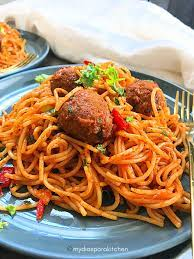

Jollof Spaghetti

Description
Jollof spaghetti is a delicious fusion of the popular Nigerian Jollof Rice and Italian Spaghetti. This dish combines the rich, spicy flavors of Jollof sauce with the comforting, familiar texture of spaghetti.
Ingredients
- Spaghetti
- Red bell peppers
- Tomatoes
- Scotch bonnet
- Onions
- Habanero
- Garlic
- Fresh ginger
- Seasonings (paprika, thyme, curry powder, pepper)
- Bay leaves
- Bouillon powder
- Salt
- Broth (chicken, beef, or vegetable broth will work)
- Veggies like peas, sweet corn, and carrots (optional)
Instructions
- Blend bell pepper, scotch bonnet, tomatoes, and onion until smooth.
- Sauté onion, garlic, and ginger in oil, then add tomato paste.
- Mix in blended sauce, spices, and broth, and bring to a boil.
- Add pasta and cook until al dente.
- Stir in vegetables, if using, and simmer for 2-3 minutes.
- Serve hot with Fried chicken and a side dish.